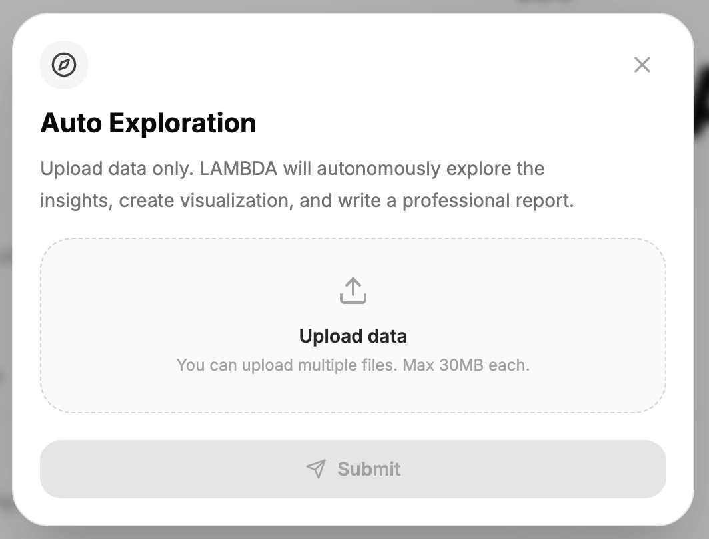
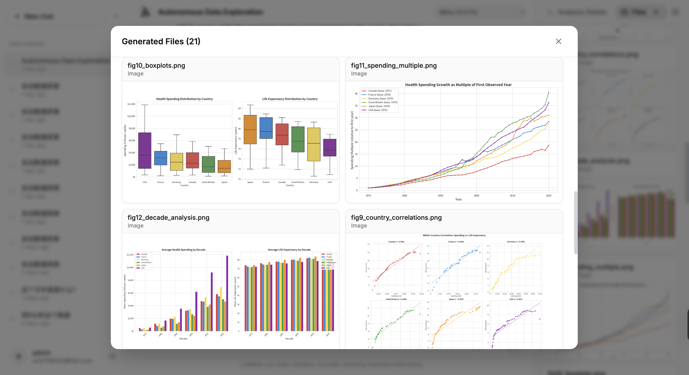
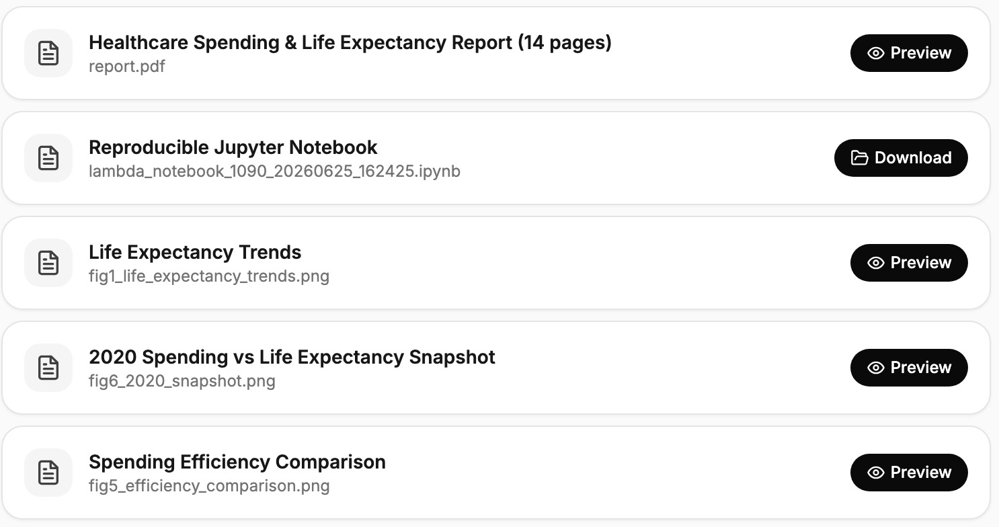
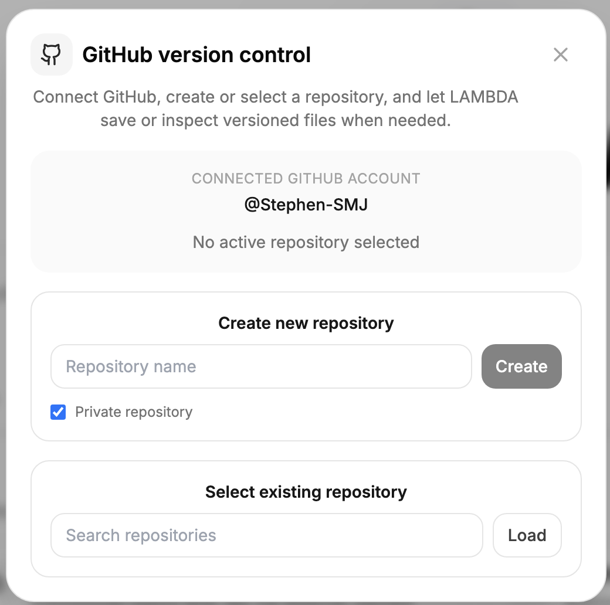
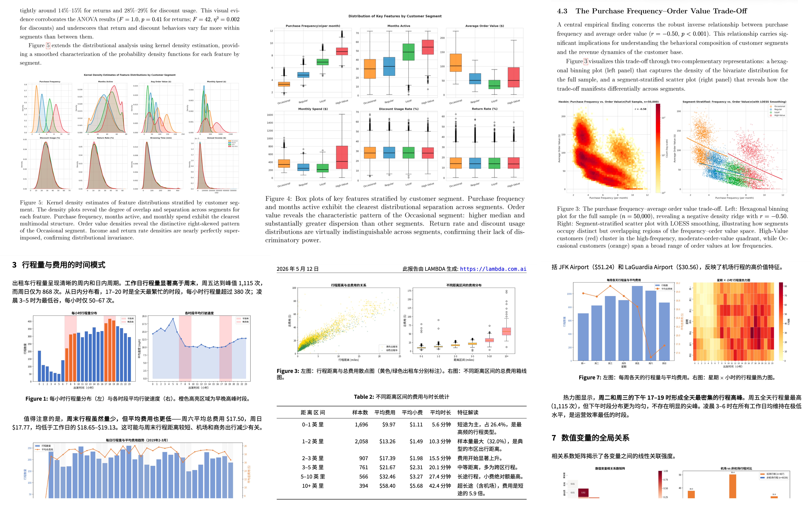
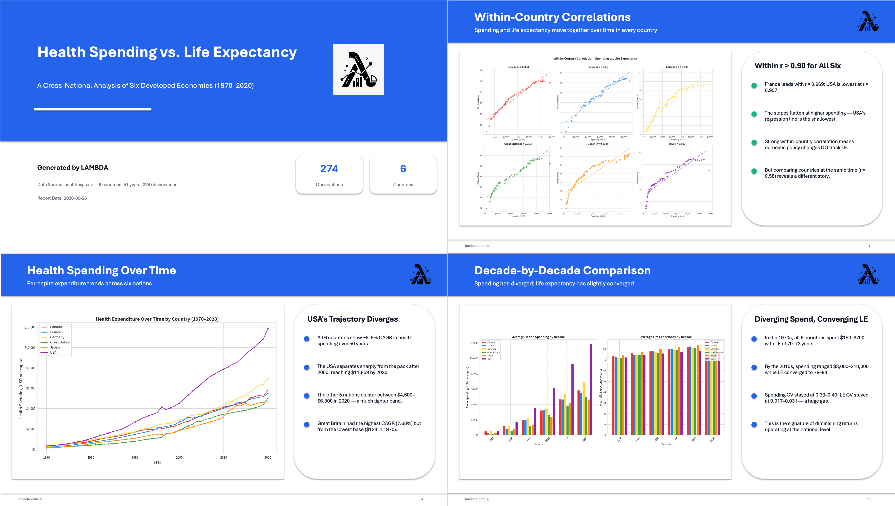

LAMBDA Web App Is Now Available – Free to Use
Demo Video: LAMBDA Web App
LAMBDA is an AI agent for statistics and data science. By simply uploading a dataset, users can automatically perform exploratory data analysis, data visualization, statistical modeling, and report generation. During the analysis, all intermediate results and visualizations are updated in real time. LAMBDA also automatically generates publication-quality PDF reports, Jupyter Notebooks, and editable PowerPoint presentations.
https://lambda.com.ai
Developed by the Research Centre for the Mathematical Foundations of Generative AI, The Hong Kong Polytechnic University (PolyU), the LAMBDA Web App is now publicly available. No local installation or environment configuration is required—simply access the platform through your web browser.
In practical data analysis, tasks such as data cleaning, exploratory analysis, visualization, statistical modeling, report writing, and presentation preparation are often performed using multiple software tools. This workflow can be time-consuming and presents a steep learning curve for users without programming or data analysis experience.
LAMBDA provides an integrated AI-powered environment that brings these tasks into a unified workflow. Users with little or no background in statistics, programming, or data science can generate professional data analysis reports within minutes.
Key Features
1. Automatic Data Exploration
With Auto Exploration, users only need to upload a dataset—no prompts or coding are required. LAMBDA automatically explores the data, identifies important patterns, performs statistical analyses, and generates a comprehensive report that helps users quickly understand the characteristics of their data and the key analytical findings.

Figure 1. Auto Exploration
2. Transparent Workflow with Real-Time Visualization
LAMBDA provides a user-friendly interface that continuously displays generated visualizations, intermediate results, and analysis artifacts while a task is running. Users can monitor the progress of their analysis, inspect generated figures and reports, and download or edit the generated outputs.
Rather than presenting only the final conclusions, LAMBDA emphasizes transparency throughout the analytical workflow. Users can understand how the analysis evolves, improving both interpretability and confidence in the generated results.

Figure 2. Real-Time Analysis Visualization
3. Reproducible Analysis via Jupyter Notebook
To support reproducible research, LAMBDA automatically generates a Jupyter Notebook (.ipynb) upon completion of each analysis. Users can also export the notebook manually.
The notebook preserves the complete workflow, including data preprocessing, visualization, statistical analyses, and generated code. Users can reproduce the analysis, inspect each step, and further customize or extend the workflow for research, teaching, or collaborative projects.

Figure 3. Generated Analysis Files
4. GitHub Integration
LAMBDA integrates directly with GitHub repositories. Generated source code, LaTeX documents, notebooks, and other analysis artifacts can be synchronized to a user's GitHub repository, making it easy to manage versions, collaborate with team members, and integrate LAMBDA into existing development workflows.

Figure 4. GitHub Integration
5. Automatic Report and Presentation Generation
Upon completion of the analysis, LAMBDA automatically organizes the results into a professionally formatted PDF report or an editable PowerPoint presentation. The system automatically structures the content, arranges figures, and formats the document, allowing users to directly use the generated materials for coursework, project reports, business presentations, or academic presentations.

Figure 5. PDF Analysis Report

Figure 6. Editable PowerPoint Presentation
Try LAMBDA
We welcome you to try LAMBDA and explore its capabilities.
https://lambda.com.ai
Related Publications
-
LAMBDA: A Large Model Based Data Agent.
Maojun Sun, Ruijian Han, Binyan Jiang, Houduo Qi, Defeng Sun, Yancheng Yuan & Jian Huang.
Journal of the American Statistical Association, 121, 1–13, 2026. -
Discussions of “LAMBDA: A Large Model Based Data Agent”.
David Donoho, Xinhong Lin, Xiao-Li Meng, Xuewei Wang & Rui (Sammi) Tang, Bang Liu, Run Yang & Fan Zhou, James Zou & Mert Yuksekgonul.
Journal of the American Statistical Association, 553, 14–35, 2026. -
Rejoinder to the Discussions on “LAMBDA: A Large Model Based Data Agent”.
Maojun Sun, Ruijian Han, Binyan Jiang, Houduo Qi, Defeng Sun, Yancheng Yuan & Jian Huang.
Journal of the American Statistical Association, 121, 36–43, 2026.